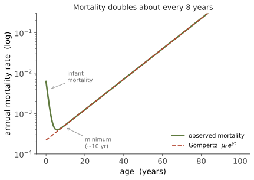

本页目录
人体 VI · 衰老的生物学
证据地位：衰老的现象学与分子标志【实】；各标志的因果层级【争】；人类的抗衰老干预【未定】——本领域炒作密度极高，本页会明确分档。 衰老是线二的终点，也是全课最大的谜之一。生理学能描述发生了什么（功能储备的系统性下降），却回答不了为什么——为什么一个能精密自我修复的系统，会在生殖期后按时崩坏？机制在本页，原因要等线四第六页。
一、衰老的现象学：一条指数曲线
先看最硬的经验事实。Gompertz 定律（1825）：成年后，人类的死亡率随年龄近似指数增长，

死亡率约每 8 年翻一番。要点在于：二十世纪医疗与公共卫生的巨大进步主要降低了 \(\mu_0\)（下移曲线，减少早亡），却几乎没有改变斜率 \(\gamma\)（衰老速率本身）。这暗示衰老过程与多数具体疾病是不同层面的东西——治好某一种病并不减慢衰老。
同时，最长寿命（约 115–122 年）几乎未随平均寿命一同延长。平均寿命大幅上升而最长寿命停滞，是理解这个领域的关键背景。
二、衰老的分子标志
综述文献把衰老归纳为一组相互关联的标志（hallmarks）。以下是较获共识的几类【实——现象存在】：
| 标志 | 内容 |
|---|---|
| 基因组不稳定 | DNA 损伤累积，修复能力下降；体细胞突变随年龄累积 |
| 端粒缩短 | 每次分裂末端缩短，达临界后触发衰老或凋亡 |
| 表观遗传改变 | DNA 甲基化模式漂移（表观遗传时钟可相当准确地预测年龄） |
| 蛋白稳态失衡 | 错误折叠蛋白累积、自噬与蛋白酶体效率下降（🔗 线一第三页） |
| 线粒体功能障碍 | 效率下降、活性氧增加 |
| 细胞衰老（senescence） | 细胞停止分裂但不死亡，并分泌促炎因子（SASP） |
| 干细胞耗竭 | 组织再生能力下降 |
| 慢性炎症 | "炎性衰老"，与多种老年病相关 |
| 营养感知失调 | 胰岛素/IGF-1、mTOR、AMPK、sirtuin 通路 |
关键的诚实提醒：这些标志彼此高度纠缠，因果层级并不清楚【争】。哪些是驱动因素、哪些是结果、哪些只是伴随现象，仍在争论。把这张表读成"衰老的九个原因"是过度解读；它更像是"衰老时可观察到的九类变化"。
三、几条主要机制假说【争】
① 损伤累积论：衰老是分子损伤（DNA、蛋白、脂质）随时间累积的结果。直观且有大量支持，但难以解释为何不同物种的累积速率差异如此之大。
② 自由基/氧化应激论：历史上极有影响，但已明显退潮——抗氧化剂补充在临床试验中总体未能延长寿命，部分研究甚至提示有害；某些增加氧化应激的干预反而延寿（毒物兴奋效应）。这是一个教科书级的案例：一个流行数十年的机制假说被干预试验证伪或大幅弱化。
③ 营养感知与热量限制：热量限制可延长多种模式生物寿命，这是【实】（在酵母、线虫、果蝇、啮齿类中重复性很好）。但在灵长类中结果混杂——两项长期恒河猴研究结论不一致（饮食组成与对照设计不同），人类证据不足以支持显著延寿。相关通路（mTOR、AMPK）是当前干预研究的主要靶点。
④ 表观遗传信息丢失【未定】：主张衰老的核心是表观遗传信息的退化，而非 DNA 序列损伤；因此原则上可逆。部分动物实验（部分重编程恢复某些组织功能）令人瞩目，但距离人类应用极远，且存在致瘤风险。这是当前最热、也最需要警惕过度解读的方向。
四、为什么衰老会存在：本页无法回答
现在到本页的边界。上述全部是机制（proximate）层面的回答——衰老时发生了什么。但它们回答不了：
- 为什么演化没有淘汰衰老？既然长寿的个体能繁殖更久，选择为何不消除它？
- 为什么不同物种寿命差异达数千倍（蜉蝣数天，某些鲨鱼与鲸数百年，某些水螅几乎不显衰老）？
- 为什么修复机制存在却不够好？细胞显然有能力修复 DNA——为什么不修得更彻底？
这些是"终极（ultimate）"问题，只能由演化理论回答：可抛弃体细胞理论、突变累积、拮抗多效性。线四第六页会正式处理。 这正是本课那条暗线的兑现点——人体线积累的所有"为什么设计这么差"的困惑，在演化线一次结清。
五、抗衰老干预的现状【未定】——请特别谨慎
这是全课商业噪音最大的地方，务必分清：
- 证据较好（但属于健康行为，非"抗衰老药"）：不吸烟、规律运动、充足睡眠、合理饮食、维持社会联系。这些对健康寿命的效应量远大于任何在售补剂。
- 动物有效、人类未证实：雷帕霉素（mTOR 抑制）、二甲双胍、senolytics（清除衰老细胞）、NAD⁺ 前体（NMN/NR）。多数在小鼠中有效、在人体缺乏硬终点证据。相关人体试验正在进行中，结论未定。
- 炒作区：绝大多数"抗衰老"补剂、"逆转生理年龄 X 岁"的宣传（多基于表观遗传时钟等替代指标，而非死亡率或疾病发生率这类硬终点）。替代指标改善 ≠ 活得更久更好，这是临床研究中反复出现的教训。
重申边界：本课不提供医疗或补剂建议。上述仅为证据地位的说明。
六、一个概念区分：寿命 vs 健康寿命
最后一个有用的区分。寿命（lifespan）是活多久，健康寿命（healthspan）是健康地活多久。当前多数人的最后十年伴随显著功能受限。
一个常被提出的目标是压缩发病期——不必大幅延长寿命，而是把疾病与失能压缩到生命末端的更短区间。从公共卫生角度，这可能比追求延寿更现实、也更有价值；而它所依赖的手段（运动、代谢健康、避免致病暴露）恰恰是证据最扎实的那些。
线二到此结束：控制系统（四）、能量与标度（五）、输运（六）、免疫（七）、微生物组（八）、衰老（九）。一路留下的"为什么设计这么别扭"的债，将在线四偿还。
下一页进入线三——遗传。从孟德尔开始重建，然后走向它的数学骨架。